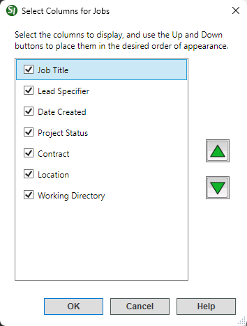
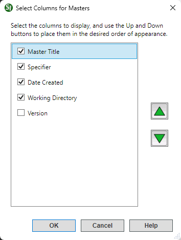
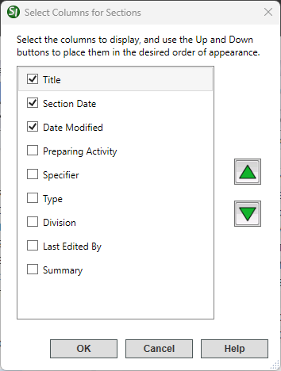

This command can also be executed from the SpecsIntact Explorer's Right-click menu.
The Columns command opens the Select Columns for Sections window, offering complete control over the column headers to show or hide in the SpecsIntact Explorer's Contents Panel, or change the order in which they appear.
Selected column names will display in the SpecsIntact Explorer. Within this window, the up and down arrows allow you to reorder the selected columns displayed in the SpecsIntact Explorer's Contents panel. Using the up arrow will shift a column header to the left, and the down arrow will shift it to the right, adjusting their order to your preference.
 For faster loading of Section files, avoid continuously viewing the Section Date or Preparing Activity. These columns should only be enabled when briefly needed, as they considerably slow down the display time. Archiving inactive projects could improve performance.
For faster loading of Section files, avoid continuously viewing the Section Date or Preparing Activity. These columns should only be enabled when briefly needed, as they considerably slow down the display time. Archiving inactive projects could improve performance.
This section details the default columns assigned to each folder type in the SpecsIntact Explorer's Available Projects panel.
 The columns will vary depending on the type of folder or subfolder selected in the SpecsIntact Explorer's Available Projects panel.
The columns will vary depending on the type of folder or subfolder selected in the SpecsIntact Explorer's Available Projects panel.
| Jobs Default Columns | Masters Default Columns |
|---|---|
 |
 |
| Sections Default Columns |
|---|
 |
Users are encouraged to visit the SpecsIntact Website's Support & Help Center for access to all of our User Tools, including Web-Based Help (containing Troubleshooting, Frequently Asked Questions (FAQs), Technical Notes, and Known Problems), eLearning Modules (video tutorials), and printable Guides.
| CONTACT US: | ||
| 256.895.5505 | ||
| SpecsIntact@usace.army.mil | ||
| SpecsIntact.wbdg.org | ||